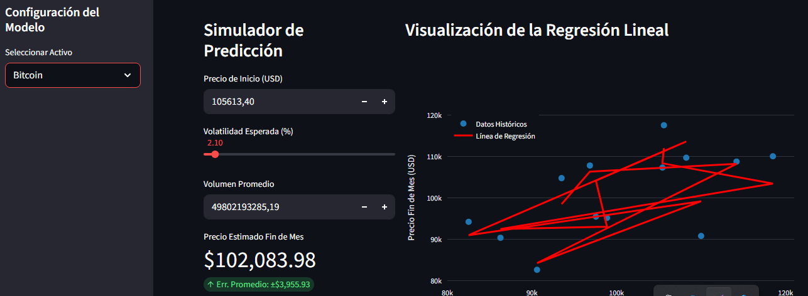

¿Es posible validar la autenticidad de un movimiento de mercado antes de ejecutar una posición? En los mercados financieros, el "ruido" suele ocultar la rentabilidad. Diseñé un ecosistema para procesar datos masivos y proyectar resultados basados en evidencia estadística.
Utilicé Microsoft Fabric para orquestar un pipeline de datos resiliente, refinando la información progresivamente:
Al cruzar el volumen promedio con la volatilidad, logramos identificar anomalías donde el precio subía sin respaldo de liquidez, permitiendo al inversor evitar "trampas" de mercado.
Entrené un modelo de Regresión Lineal para proyectar el precio de cierre mensual. El resultado fue una convergencia estadística con un $R^2$ de 0.9863.
En el gráfico superior (Caso Bitcoin), se observa cómo la regresión "viaja" a través de las dimensiones de volatilidad y precio inicial para encontrar el punto de equilibrio. Esta herramienta transforma la especulación en un cálculo de probabilidades fundamentado.
He desplegado una versión interactiva del modelo en Streamlit para experimentación en tiempo real.